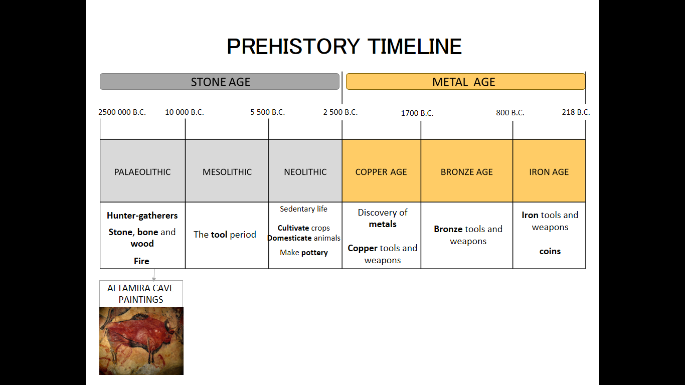
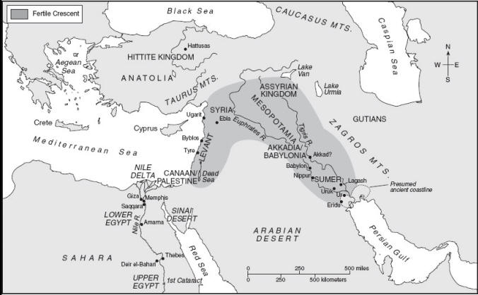

The Paleolithic Age saw humans living in small hunter-gatherer bands. Sustenance was secured through foraging for fruit and the use of fire and simple stone or wood tools. During the Neolithic Revolution, humans learned to domesticate animals, improved stone tools, invented agriculture and began to live in sedentary settlements, giving up the nomadic life of the Paleolithic Age. The Neolithic Age was succeeded by the Bronze Age, where humans made tools of copper and tin.
Civilizations require the development of agricultural surplus to produce and sustain their conditions of life. Key accomplishments that assisted in the fulfillment of this necessity include the transition from residing in villages to living in cities and the invention of irrigation. Early civilizations emerged, historically, in river valleys, locations able to facilitate and sustain population growth. Western civilization arose in the fertile crescent, southeast of Anatolia and encompassing the Tigris and Euphrates rivers.

The Fertile Crescent
Cities first emerged in the Tigris-Euphrates valley, a region known as Mesopotamia.
- Sumer
Sumer, in the south of Mesopotamia, was composed of small warring cities who fought over control of the water supply. Victors consolidated their territory, leading to increasingly larger settlements, unification being desirable for efficient use of irrigation.
- Akkadians
The Akkadians were Semitic-speaking semi-nomads originating in the deserts west of Mesopotamia. Their king, Sargon, conquered Sumer after settling in the central area of the Tigris-Euphrates valley, unifying the territory under an Empire that came to span not only Mesopotamia, but beyond into the Iranian plateau and Lebanon.
- Third Dynasty of Ur
The Sumerians came to resent Akkadian power and eventually regained rule of Mesopotamia through a dynasty centered in the city of Ur. This lasted for around 100 years, followed by a period of chaos between warring dynasties where no single dynasty claimed total control. By the next period of reunification, the Sumerians no longer retained their group identity.
- Amorites
The Amorites were the next people to unify Mesopotamia. Also known as the Old Babylonian dynasty, they ruled for around 300 years. The Amorite king Hammurabi wrote the most extensive law code dating from Mesopotamia, outlining a rigidly stratified, hierarchical social structure. Slavery, though often temporary, was a major feature of Amorite society.
- Hittites, Kassites
The Old Babylonian empire disintegrated after being assaulted by the Hittites, from the north in Anatolia, and the Kassites, from the East in present-day Iran. The Kassites establied rule for 300 years.